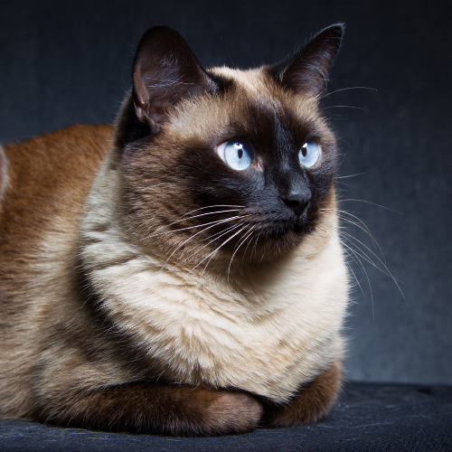
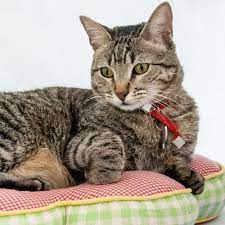
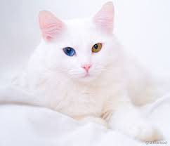

Os gatos sempre fascinaram os seres humanos com sua elegância,
graciosidade e comportamento enigmático.
Além de serem companheiros leais e adoráveis,
eles possuem uma série de curiosidades que os tornam ainda mais interessantes.
Conheça algumas curiosidades relacionadas a alguns tipos de gatos logo abaixo.

Os gatos siameses possuem um gene que afeta a produção de pigmento em seus pelos. Como resultado, eles têm pelos mais escuros nas extremidades do corpo, como nas orelhas, focinho, patas e cauda, enquanto o restante do corpo tem uma cor mais clara.

O padrão de listras encontrado em gatos rajados é chamado de "marbling". Essas listras são formadas por pelos individuais que são coloridos de forma alternada em faixas claras e escuras.

Uma das condições relacionadas à heterocromia em gatos é a síndrome de Waardenburg. Essa síndrome é um distúrbio genético que pode afetar a pigmentação da pele, cabelos e olhos em humanos e animais.